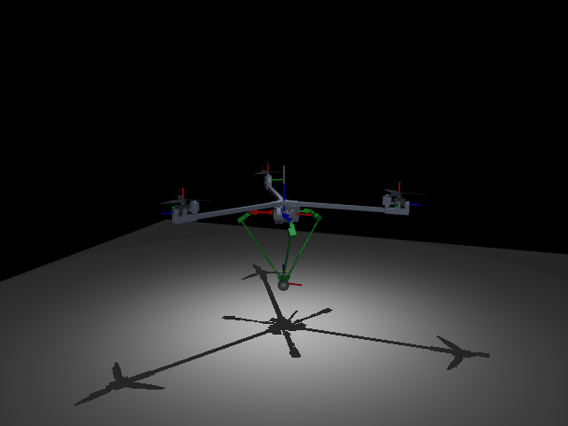
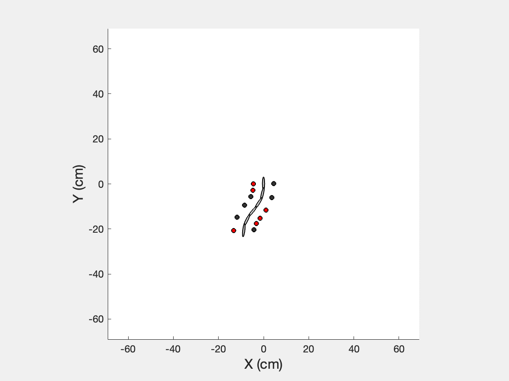
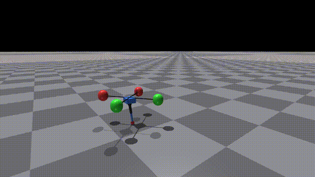

Chuhan ZHANG
I am a senior undergraduate student at Technion - Israel Institute of Technology. I am applying for PhD and Master’s programs in Robotics starting Fall 2026 and seeking Research Assistant opportunities.
My research interests are in embodied intelligence for robot locomotion. I focus on:
- Dynamic modeling and model-based control
- Learning-based control for legged robots
- Sim-to-real transfer for robot locomotion
- Hybrid locomotion (e.g., legged + aerial/propeller systems)
chuhan.zhang@gtiit.edu.cn | GitHub | LinkedIn | Google Scholar
Technion - Israel Institute of Technology
News
Selected Projects

Propeller-Assisted 3D Hopper: Hierarchical Force Allocation
Research Assistant @ CUHK, Jul 2025 – Jun 1, 2026
Developed an SRB-based Hierarchical Force Allocation (HFA) stack for a 3-RSR parallel-leg hopper, prioritizing leg contact forces and using tri-rotor thrust as residual authority. Built the real-time LCM control middleware and inverse-kinematics pipeline, enabling continuous 3D hopping and outdoor disturbance recovery.
* First-authored paper accepted by IEEE CASE 2026. arXiv

Reinforcement Learning for Parallel-Mechanism Hopping
Research Assistant @ CUHK & Technion, Nov 2025 – Present
Training PPO hopping policies for a 3-RSR parallel-leg robot in Isaac Gym and MuJoCo MJX, comparing serial-leg and native closed-chain simulation for sim-to-real transfer. Built encoder-decoder policies for flight-phase underactuation, scaled GPU training across thousands of parallel environments, and validated against a model-based QP controller on real-robot logs with domain randomization and actuator-delay modeling.

Energy-Recycling Bipedal Walking Robot
Undergraduate Research Project, 2024
Details to be added upon publication.

N-link Swimmer Dynamics
Learning Research Project, 2025
MATLAB simulation for kinematics and dynamics of multi-link legged swimmers using Lie group formulations and RFT.
* Special thanks to Prof. Baxi Chong for his guidance and support on this project.

RL Aero-Hopper
Independent Research Project, 2025
Reinforcement learning framework applied to an aero-hopper robot for robust locomotion.
Education
Technion - Israel Institute of Technology